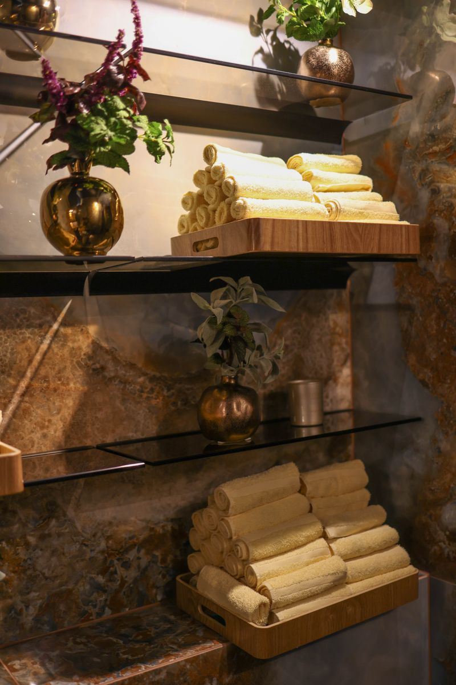

Маршрут гостя
Комфорт змінюється разом із зоною.
Один комплект не мусить виконувати всі ролі. Для кожного етапу відпочинку є доречний формат виробу.
01
Після бані та SPA
Махровий рушник для швидкого й приємного контакту зі шкірою.
02
На лежаку
Більший формат, який зручно розстелити для відпочинку.
03
Між зонами
Халат і капці завершують комфортний перехід гостя.
 Комфорт гостя
Комфорт гостя Деталь сервісу
Деталь сервісу